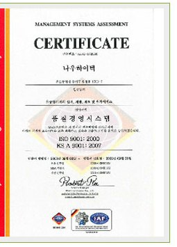
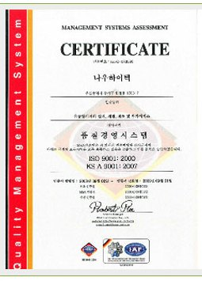

품질방침
고객만족을 위한 제품 · 품질제일을 위한 경영 · 품질보증 활동의 생활화
나우하이텍(이하 “당사”라 함)은 전사원이 개선의식, 품질의식, 원가의식, 위기의식의 고취를 통하여 고객이 요구하는 품질의 제품을 적기에 공급함으로써 고객만족 경영을 실현하기 위하여, 다음과 같이 품질방침을 정한다. 따라서, 이를 달성하기 위해서 전사원은 성실하고 정직한 자세로 맡은 바 책임을 다하여야 하며 품질방침을 효율적으로 수행하기 위하여 당사는 ISO 9001 : 2000 규격을 기본으로 품질경영 시스템을 수립하고 방침관리 PROCESS에 따라 연도별 사업계획 및 목표를 설정하고 다음 각 항을 원칙으로 품질방침을 실행한다. 본인은 공장장을 품질경영대리인으로 선정하며 아래와 같이 책임과 권한을 위임한다.
직무
- 품질경영시스템에 필요한 프로세스가 수립되고 실행, 유지
- 품질경영시스템 성과 및 개선필요성에 대하여 대표이사에게 보고
- 조직 전반에 고객요구사항을 반영하기 위한 관리
- 품질경영시스템 운영상 발생되는 조직간의 문제해결
품질경영시스템 인증서 (KIC)


본문에 적힌 기준 규격은 원본 그대로 ISO 9001 : 2000 입니다. 인증현황 페이지에는 ISO 9001:2015 인증서가 함께 게시돼 있어, 현행 방침문의 규격 표기 갱신 여부는 ※확인 필요